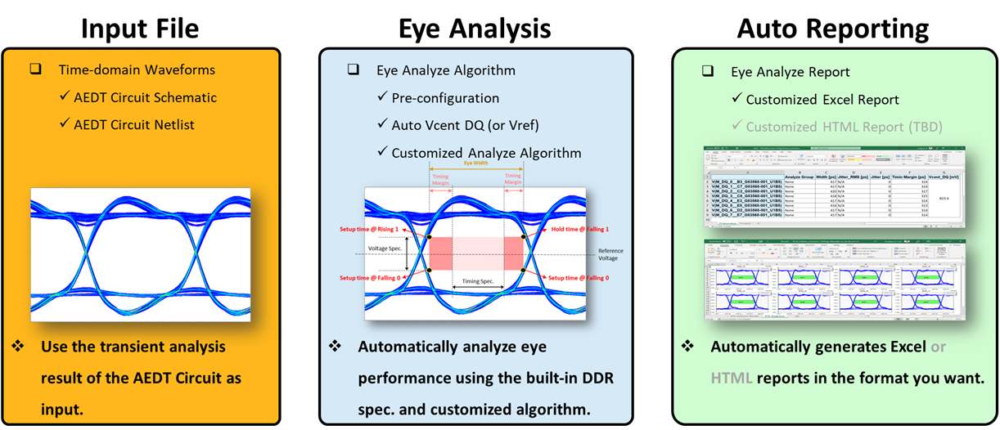

Ansys DDR Eye Analyzer - ADEA v0.6.5
What's New?
v1.0.1
The process for choosing a version of Ansys Electronics Desktop(AEDT) has been modified.
v1.0 : AEDT executes in a specific version with reference to environmental variables.
v1.0.1 : The version of AEDT can be selected using 'Version Selection' window.
What is ADEA?
A new Solution for DDR analysis by Ansys Korea.

Why ADEA?
1. Easy
Pre-defined User Configurations
Pre-defined DDR Specifications
Automatic Net Classification & Target Net Assign Algorithm
Selective Verification Process

2. Simple
One-Click Verification Process
3. Customizable
Customziable Verification Algorithm & Process
Customziable Final Report (Excel, HTML, etc.)
User Guide
Document - PDF
Video - MP4
Quick Guide for IBIS Optimization
Select Version of Ansys Electronics Desktop
What is Deifnition File?
Modify and/or Add DDR Specifications
Automatic Net Classifications
Automatic IBIS Identification
What is Configuration File?
Analyze with 'Analyze Group'